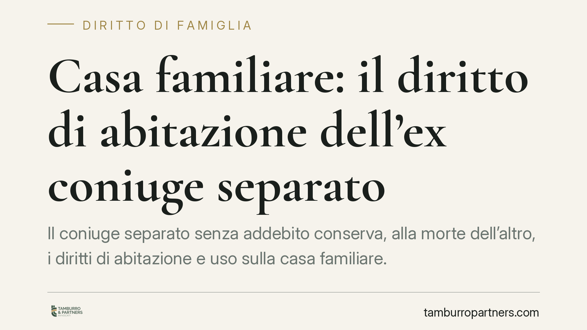

Casa familiare: il diritto di abitazione dell'ex coniuge separato
Il coniuge separato senza addebito conserva, alla morte dell'altro, i diritti di abitazione e uso sulla casa familiare. Lo ribadisce la Corte di Cassazione, che allinea la posizione del separato a quella del coniuge convivente. Il diritto viene meno solo quando l'immobile ha perso ogni collegamento con la destinazione familiare. Una questione che incide su successioni, quote ereditarie e rapporti con i creditori.

Il caso e il principio affermato
Alla morte di uno dei coniugi separati, l'altro rivendica il diritto di continuare ad abitare nella casa che era stata la residenza familiare. Gli eredi contestano la pretesa, sostenendo che la separazione avrebbe reciso il vincolo che giustifica il beneficio.
La Corte di Cassazione riconosce il diritto al coniuge superstite separato senza addebito, equiparandone la posizione a quella del coniuge non separato. Il diritto di abitazione sulla casa familiare, insomma, sopravvive alla separazione personale, purché l'immobile conservi il proprio collegamento con la destinazione familiare.
Diritto di abitazione del coniuge separato sulla casa familiare: l'inquadramento normativo
Il punto di partenza è l'art. 540, comma 2, c.c., che riserva al coniuge superstite, in aggiunta alla quota di eredità, i diritti di abitazione sulla casa adibita a residenza familiare e di uso sui mobili che la corredano, se di proprietà del defunto o comuni. Sono diritti reali di godimento gravanti sull'asse ereditario, che si sommano alla quota spettante per legge o testamento.
La posizione del coniuge separato è disciplinata dall'art. 548 c.c.: il comma 1 equipara ai fini successori il coniuge cui non sia stata addebitata la separazione a quello non separato. Il comma 2 riconosce invece al coniuge con separazione addebitata soltanto un assegno vitalizio, quando al momento dell'apertura della successione godeva degli alimenti a carico del defunto.
Combinando le due norme, il coniuge separato senza addebito rientra a pieno titolo tra i beneficiari dei diritti di abitazione e uso dell'art. 540, comma 2, c.c.
Un orientamento non del tutto pacifico
È corretto segnalare che sul punto la giurisprudenza di legittimità ha oscillato. Una tesi restrittiva ha negato al coniuge separato i diritti dell'art. 540 c.c., ritenendo la separazione idonea a interrompere l'effettivo legame con la casa familiare. La tesi estensiva, oggi valorizzata, muove invece dall'equiparazione dell'art. 548, comma 1, c.c.: se il separato senza addebito conserva integri i diritti successori, non vi è ragione di sottrargli proprio quelli di abitazione e uso.
Il vero discrimine, allora, non è la separazione in sé, ma la permanenza del collegamento tra l'immobile e la destinazione familiare. Se la casa ha perso quella funzione, il beneficio non spetta.
Implicazioni pratiche
Per il coniuge superstite separato. La successione dell'ex coniuge può fondare la pretesa a continuare ad abitare nell'immobile, oltre alla quota ereditaria. La condizione è che non vi sia addebito e che la casa mantenga il proprio nesso con la destinazione familiare.
Per gli altri eredi. I diritti di abitazione e uso riducono il valore di quanto ricevono: gravano sull'asse e ne comprimono la disponibilità. Chi intende contestarli deve dimostrare l'addebito della separazione oppure la definitiva perdita del collegamento con la destinazione familiare.
Per gli istituti di credito e i terzi. Un immobile gravato dal diritto di abitazione del coniuge superstite è meno appetibile e più difficile da liquidare. La verifica preventiva dei rapporti familiari del debitore o del dante causa diventa dirimente in fase di garanzia e di recupero.
Il nodo probatorio
La controversia si gioca quasi sempre sulla prova. Chi rivendica il diritto ha interesse a dimostrare che l'immobile era ed è rimasto la residenza familiare. Chi lo contesta deve provare la circostanza impeditiva: l'addebito della separazione o il venir meno del collegamento con la destinazione familiare, ad esempio per un trasferimento stabile in altra abitazione o per un mutamento definitivo dell'uso del bene.
La ripartizione dell'onere segue le regole generali: chi allega un fatto costitutivo lo prova, chi eccepisce un fatto impeditivo o estintivo prova quest'ultimo.
Cosa fare in concreto
- Verificate il titolo di provenienza dell'immobile e la sua concreta destinazione a residenza familiare, raccogliendo documenti di residenza e utenze.
- Accertate la natura della separazione: la presenza o assenza di addebito determina l'applicabilità dell'art. 540, comma 2, c.c.
- Valutate l'opportunità dell'accettazione con beneficio d'inventario quando l'asse presenta debiti, per separare il patrimonio ereditario da quello personale.
- Considerate, se lesi nella quota, l'azione di riduzione ex artt. 553 e seguenti c.c., previa verifica della posizione di legittimario.
- Documentate ogni mutamento d'uso dell'immobile, poiché su di esso si concentra il giudizio sul collegamento con la destinazione familiare.
Il diritto di abitazione del coniuge separato sulla casa familiare resta materia in cui l'esito dipende dai fatti concreti e dalla loro prova: ogni situazione va esaminata singolarmente.
Contributo informativo a cura di Tamburro & Partners Avvocati. Non costituisce parere legale.
Ogni famiglia ha il suo equilibrio.
Separazione, divorzio, affidamento, assegno: se vuoi un confronto riservato su una specifica situazione, scrivi allo studio. Ti rispondiamo entro un giorno lavorativo.